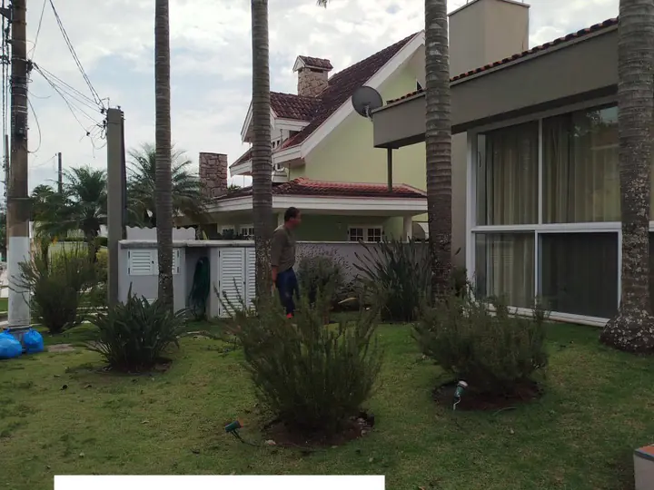

Serviço
Gramado uniforme começa na base.
Grama é o item mais barato de comprar e o mais caro de refazer. O tapete que fica bonito por anos e o que falha em seis meses costumam ter a mesma grama — e bases completamente diferentes.

Por que gramado falha
Quase sempre por um destes três motivos, e nenhum deles é a qualidade da grama:
- Base malfeita. Solo compactado, entulho enterrado, sem nivelamento. A raiz não desce e a placa não pega.
- Água parada. Sem caimento, a água empoça e a grama apodrece em mancha. É o padrão de falha mais fácil de reconhecer.
- Espécie incompatível com o uso. Grama de sol pleno em área sombreada, ou grama delicada onde passa gente e cachorro o dia inteiro.
Escolher a espécie pelo uso, não pela foto
As gramas mais usadas em projeto no Brasil se diferenciam principalmente por tolerância a sombra, resistência a pisoteio e textura:
| Espécie | Ponto forte | Costuma ir bem em |
|---|---|---|
| Esmeralda | Equilíbrio geral e boa densidade | Jardim residencial a sol pleno |
| São Carlos | Tolera sombra parcial | Área sob árvore ou muro alto |
| Santo Agostinho | Folha larga, tolera sombra e maresia | Litoral e área sombreada |
| Bermuda | Resistência a pisoteio | Área de uso intenso e esportiva |
| Zoísia japonica | Rusticidade | Grandes áreas e taludes |
Qual entra no seu caso depende da insolação real, do pisoteio e do clima — é parte do que a visita técnica define. Nenhuma delas resolve sombra profunda: onde não bate sol nenhum, o caminho é forração ou piso, não grama.
Formação, troca e recuperação
- Formação — área nova. Limpeza, descompactação, nivelamento com caimento definido, adubação de base e colocação das placas unidas, sem junta aparente.
- Troca — quando o gramado já está tomado por invasora ou perdeu mais da metade da área. Remoção do antigo, correção da base e novo plantio.
- Recuperação — quando ainda há o que salvar. Descompactação, correção de nível nos pontos de empoçamento, adubação, controle de invasora e replantio das falhas.
Entre trocar e recuperar, a conta muda conforme quanto sobrou. A visita técnica define qual dos dois sai mais barato no seu caso — e às vezes a resposta é recuperar.
Gramado falhado ou tomado por mato?
Mande uma foto. Dá para dizer pela imagem se é caso de recuperação ou de troca — e a diferença de custo entre os dois é grande.
Quero meu orçamento grátisDúvidas frequentes
Sobre grama & gramados
Qual a melhor grama para o meu jardim?
Dá para plantar grama em cima da antiga?
Quanto tempo até o gramado fechar?
Vocês fazem gramado em chácara e área grande?
Continue
Outros serviços
Projeto de Paisagismo
Projeto exclusivo para o seu espaço: conceito, distribuição de canteiros, lista de espécies, iluminação e acabamentos.
Ver mais →Execução & Plantio
Preparo e correção de solo, drenagem, irrigação, plantio e acabamento. Executamos o que projetamos — sem terceirizar a mão de obra.
Ver mais →Manutenção de Jardins
Visitas programadas com poda técnica, adubação, controle fitossanitário, replantio pontual e limpeza. Contrato mensal ou avulso.
Ver mais →